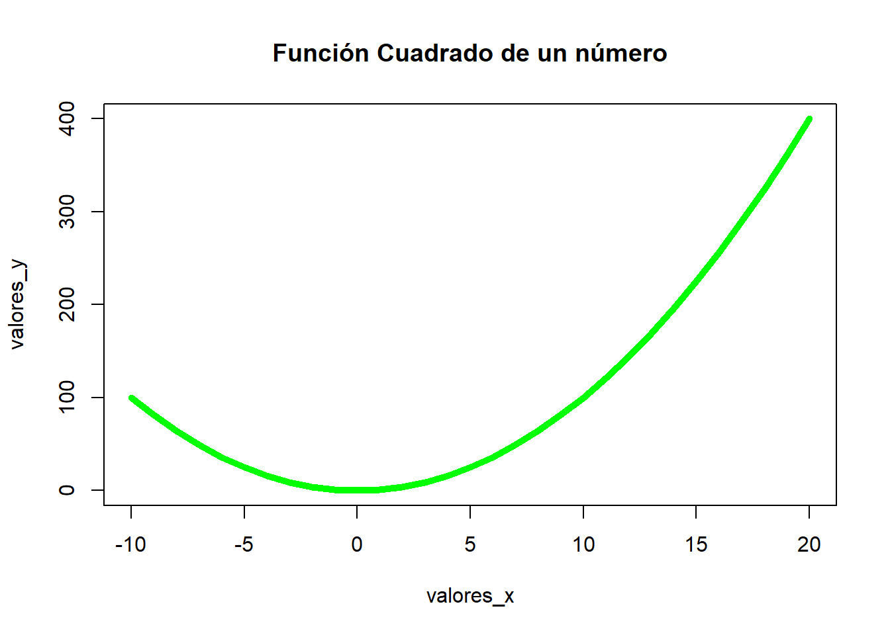
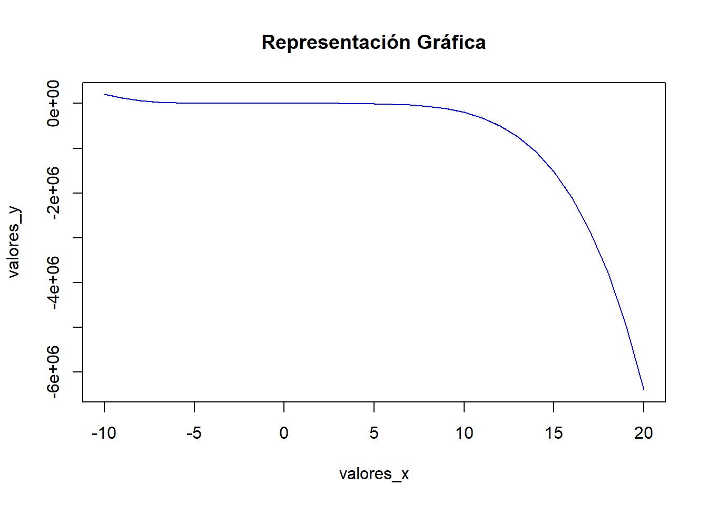

set.seed(1234)
loteria.primitiva <- function(num.participaciones, num.buscar){
total.con.premio <- 0
participaciones <- vector("list", length = num.participaciones)
for (i in 1:num.participaciones){
participacion <- sample(1:49, 8, replace = FALSE)
participaciones[[i]] <- participacion
for (num in num.buscar) {
if (num %in% participacion){
total.con.premio <- total.con.premio + 1
break
}
}
}
save(participaciones, file = "participaciones.RData")
return (total.con.premio)
}
num.buscar = c(1,2,3,4,5,47,48,49)
total.con.premio <- loteria.primitiva(5000, num.buscar)
load("participaciones.RData")Tema 01 - Introducción a R
Pregunta 1 (20 puntos)
Construya una función que contenga 2 argumentos, que genere un valor “n” de participaciones de la lotería primitiva y obtenga el número total de esas participaciones que contengan algún número en el vector “v” facilitado en la función. La función debe devolver las “n” participaciones y el número total referido anteriormente. Fije la semilla del generador aleatorio al valor: 1234.
- Utilice la función con \(n=5000\) y con el vector: “1,2,3,4,5,47,48,49”. Guarde todas las participaciones en un fichero RData.
Para las participaciones del apartado 1.
- Obtenga el valor que más veces ha aparecido y el que menos ha aparecido.
- Obtenga la pareja de valores que más veces ha aparecido de forma simultánea.
- Obtenga las 3 observaciones más pequeñas de cada participación y muestre aquellas que se han repetido más de 2 veces.
Para resolver el apartado 1, se define una función llamada “loteria.primitiva” que simula el juego de la primitiva. Se utiliza un bucle “for” para crear todas las participaciones utilizando el método “sample()”, que genera números aleatorios. Dentro de este bucle, se verifica si cada participación creada contiene algún número premiado mediante otro bucle “for” y una condición “if” con “%in%” para comprobar la presencia de los números premiados en la participación. Una vez creadas todas las participaciones, se guarda el resultado haciendo uso de la función “save()” y se devuelve el número de participaciones premiadas mediante “return”. Por último, para cargar los datos, hacemos uso de la función “load()”.
[[1]]
[1] 28 16 22 37 44 9 5 38
[[2]]
[1] 16 4 34 39 22 26 6 15
[[3]]
[1] 14 49 4 47 21 40 20 3
[[4]]
[1] 36 31 29 5 2 40 20 3
[[5]]
[1] 23 41 36 8 32 42 43 2
[[6]]
[1] 15 38 6 29 32 8 26 17El número de veces que aparece algún número del vector 1 2 3 4 5 47 48 49 es: 3938Para resolver el apartado a, se crea la función “valores.frecuentes()”, a la cual se le introducen las participaciones como argumento. Esta función utiliza tres bucles “for”:
El primer bucle “for” inicializa un vector de frecuencias, estableciendo inicialmente todos los valores en 0.
El segundo bucle “for” recorre todas las participaciones y tiene un bucle “for” anidado que itera sobre cada valor dentro de cada participación. Este bucle actualiza el vector de frecuencias contando cuántas veces aparece cada valor en todas las participaciones.
Finalmente, otro bucle “for” recorre el vector de frecuencias para encontrar el valor máximo y el mínimo.
La función devuelve un vector con el valor máximo, el valor mínimo y el vector de frecuencias actualizado.
valores.frecuentes <- function(participaciones){
frecuencias <- vector("list", length = 49)
menor <- Inf
mayor <- 0
menores <- vector("list")
mayores <- vector("list")
for (i in 1:49){
frecuencias[[i]] <- 0
}
for (i in participaciones){
for (j in i){
frecuencias[[j]] <- frecuencias[[j]] + 1
}
}
for(i in 1:49){
if (menor == frecuencias[[i]]){
menores[[length(menores) + 1]] <- i
}
if (mayor == frecuencias[[i]]){
mayores[[length(mayores) + 1]] <- i
}
if (menor > frecuencias[[i]]){
menores <- list()
menores[[1]] <- i
menor <- frecuencias[[i]]
}
if (mayor < frecuencias[[i]]){
mayores <- list()
mayores[[1]] <- i
mayor <- frecuencias[[i]]
}
}
return( c(menor = menor, menores = menores, mayor = mayor, mayores = mayores))
}Menor frecuencia: 766 Números con menor frecuencia: 14 Mayor frecuencia: 869 Números con mayor frecuencia: 13 Para resolver el apartado b, se crea la función “pares.mas.repetidos()”, que recibe como parámetro de entrada las participaciones y devuelve un vector con las frecuencias de aparición, el número de apariciones y los valores mayores.
Aquí está el proceso en resumen:
Se crea un dataframe para almacenar cada par posible de valores de entre los 49 números de la primitiva y el número de apariciones que tiene ese par.
Se utiliza un bucle “for” para recorrer todas las participaciones. Dentro de este bucle, se ordenan los valores de cada participación utilizando el método “sort()” y se obtiene la longitud de la participación con “length()”.
Se utiliza otro bucle “for” para recorrer todos los valores de la participación menos el último, ya que no puede tener pareja superior. Dentro de este bucle, se itera sobre las parejas posibles de cada participación y se utiliza el método “which” para verificar si la pareja está contemplada en el dataframe creado anteriormente. Si la pareja existe en el dataframe, se incrementa su conteo en 1, de lo contrario, se agrega la pareja al dataframe con un conteo inicial de 1.
Una vez que se tienen todas las parejas y sus frecuencias, se utiliza el método “max()” para obtener la mayor frecuencia y se filtran las parejas que tienen esa frecuencia, por si existe más de una pareja con esa frecuencia.
Finalmente, se devuelve un vector con las frecuencias de aparición, el número de apariciones y los valores mayores de las parejas más repetidas
pares.mas.repetidos <- function(participaciones){
mayor <- 0
mayores <- vector("list")
frecuencias <- data.frame(
parejas = paste(seq(1, 48, by = 1), seq(2, 49, by = 1), sep = ","),
repeticiones = rep(0, length = 24)
)
for (particion in participaciones) {
particion <- sort(particion)
longitud <- length(particion)
for (num in 1:(longitud - 1)) {
pareja <- c(particion[num], particion[num + 1])
index <- which(frecuencias$parejas == paste(pareja, collapse = ","))
frecuencias$repeticiones[index] <- frecuencias$repeticiones[index] + 1
}
}
mayor <- max(frecuencias$repeticiones)
mayores <- frecuencias$parejas[frecuencias$repeticiones == mayor]
return( c(frecuencias = frecuencias, mayor = mayor, mayores = unlist(mayores)))
}Mayor frecuencia: 141 Pares con mayor frecuencia: 23,24 Para el apartado c, se crea la función “particiones.mas.pequenas()”, que toma como entrada las participaciones y devuelve un vector con todas las participaciones más pequeñas con una frecuencia mayor a dos.
Se utiliza un bucle “for” para iterar sobre todas las participaciones.
Dentro del bucle, se ordenan las participaciones utilizando el método “sort” y se seleccionan las tres primeras mediante “[1:3]”, ya que estas serán las más pequeñas.
Se crea una clave para cada partición con el método “paste”, que une los tres valores mínimos de cada participación separados por comas.
Se utiliza una estructura condicional “if else” para verificar si la clave ya está contemplada. Si lo está, se incrementa su frecuencia, de lo contrario, se añade la clave con una frecuencia inicial de 1.
Finalmente, se devuelve un vector con todas las participaciones más pequeñas con una frecuencia mayor a dos.
particiones.mas.pequenas <- function(participaciones){
frecuencias <- c()
for (particion in participaciones){
menores <- sort(particion)[1:3]
clave <- paste(menores, collapse = ",")
if (clave %in% names(frecuencias)){
frecuencias[clave] <- frecuencias[clave] + 1
} else {
frecuencias[clave] <- 1
}
}
filtro <- subset(frecuencias, frecuencias > 2)
return(filtro)
}Se han detectado un total de 603 participaciones más pequeñas con frecuencia mayor a 2:Algunas de las participaciones son: Partición: 5,9,16 - Frecuencia: 5
Partición: 4,6,15 - Frecuencia: 3
Partición: 2,3,5 - Frecuencia: 13
Partición: 6,8,15 - Frecuencia: 7
Partición: 3,8,16 - Frecuencia: 3
Partición: 1,8,9 - Frecuencia: 11
Partición: 6,17,21 - Frecuencia: 4
Partición: 2,6,11 - Frecuencia: 4
Partición: 6,9,21 - Frecuencia: 3
Partición: 6,15,19 - Frecuencia: 3
Partición: 7,9,14 - Frecuencia: 4
Partición: 4,7,17 - Frecuencia: 3
Partición: 3,9,12 - Frecuencia: 5
Partición: 4,6,7 - Frecuencia: 8
Partición: 8,12,20 - Frecuencia: 3
Partición: 3,6,11 - Frecuencia: 3 Pregunta 2 (20 puntos)
Con los siguientes dos datasets (data.frames):
set.seed(6543)
df1 = data.frame(
Id = rep(1:100,20),
Alturamm = rnorm(2000,170,10),
PesoKg = rnorm(2000,65,3)
)
df2 = data.frame(
Id = 1:100,
Sexo = sample(c("Hombre","Mujer"),100, replace = TRUE),
Edad = sample(18:45,100,replace = TRUE)
)- Una o fusione los dos datasets o tablas utilizando el identificador “Id” que relaciona las dos tablas. Obtenga tanto el registro que tiene mayor altura como el registro que tiene menor peso, e indique que edad y sexo tienen.
- Calcule la media de los pesos para los hombres y para las mujeres por separado. Igual para las alturas.
- Calcule cuántos hombres hay que tengan una edad entre 25 y 30 años (ambas incluidas) con una altura superior a 173mm o un peso menor que 64kg.
- Grabe en un fichero RData el dataset fusionado y los dos datsets iniciales.
- Construya una función de 3 argumentos que devuelva dos datasets con una estructura semejante a los dados anteriormente, pero que se generen al facilitarle una “semilla”, un número “n” de personas (en el dado anteriormente se han generado para n=100 personas), y el vector con las edades de las personas “vedades”. Utilice la función con semilla: 78, número de personas 200 y vector de edades de 14 a 50, y sobre esos datasets responda al apartado c.
Para resolver el apartado a, creamos la función ‘union.data.frame()’ que recibe como parámetros de entrada dos dataframes y los une utilizando la ‘id’ de los mismos. Una vez que tenemos el dataframe unido, con el método ‘which.max()’ buscamos cuál es la altura máxima y con ‘which.min()’ buscamos el peso mínimo.
union.data.frame <- function(data1, data2){
return(merge(data1, data2, by.x="Id", by.y="Id"))
}
resultado.union = union.data.frame(df1, df2)
mayor.altura <- which.max(resultado.union$Alturamm)
menor.peso <- which.min(resultado.union$PesoKg)
registro.mayor.altura <- resultado.union[mayor.altura, ]
registro.menor.peso <- resultado.union[menor.peso, ] Id Alturamm PesoKg Sexo Edad
1 1 176.5345 64.14632 Hombre 45
2 1 175.6372 64.90283 Hombre 45
3 1 158.1014 63.36265 Hombre 45
4 1 162.9749 67.72423 Hombre 45
5 1 164.2141 65.10229 Hombre 45
6 1 174.9892 69.89997 Hombre 45Registro con mayor altura y menor peso:Registro con mayor altura: 95 con altura de: 204.020318925194 , con una edad de: 27
y de sexo: Mujer Id Alturamm PesoKg Sexo Edad
1898 95 204.0203 63.9578 Mujer 27Registro con menor peso: 66 con un peso de: 53.8646458533667 con una edad de: 22
y de sexo: Hombre Id Alturamm PesoKg Sexo Edad
1311 66 184.666 53.86465 Hombre 22Para el apartado b creamos la función ‘media.peso.y.altura()’ que recibe como parámetro un dataframe y devuelve un vector con la media de peso y altura en función del sexo.
Con un bucle ‘for’, recorremos todas las filas del dataframe. Dentro de este bucle, utilizamos un ‘if’ para filtrar el sexo y luego realizamos un sumatorio de las alturas y los pesos. Una vez que hemos recorrido todas las filas, dividimos estos sumatorios por el total de hombres o mujeres, según corresponda.
media.peso.y.altura <- function(resultado.union){
hombres <- 0
altura.hombre <- 0
peso.hombre <- 0
mujeres <- 0
altura.mujer <- 0
peso.mujer <- 0
for (i in 1:nrow(resultado.union)){
registro <- resultado.union[i, ]
if (registro$Sexo == "Hombre"){
hombres <- hombres + 1
altura.hombre <- altura.hombre + registro$Alturamm
peso.hombre <- peso.hombre + registro$PesoKg
} else if (registro$Sexo == "Mujer") {
mujeres <- mujeres + 1
altura.mujer <- altura.mujer + registro$Alturamm
peso.mujer <- peso.mujer + registro$PesoKg
}
}
altura.hombre <- altura.hombre / hombres
peso.hombre <- peso.hombre / hombres
altura.mujer <- altura.mujer / mujeres
peso.mujer <- peso.mujer / mujeres
return(c(altura.hombre, peso.hombre, altura.mujer, peso.mujer))
}Media de altura para hombres: 169.9189 Media de peso para hombres: 65.03668 Media de altura para mujeres: 170.3753 Media de peso para mujeres: 65.06936 Para el apartado c, haciendo uso del método ‘subset’, filtramos con los parámetros que nos indica el enunciado y luego, con el método ‘nrow’, contamos cuántas filas hay.
filtro <- subset(resultado.union, Sexo == "Hombre" & (Edad >= 25 & Edad <= 30) &
(Alturamm > 173 | PesoKg < 64))
cantidad.filtrada <- nrow(filtro)Número de hombres con edad entre 25 y 30 años, altura superior a 173mm o
peso menor que 64kg: 189 En el apartado d, utilizamos el método “save” para guardar el dataframe fusionado y luego, haciendo uso del método “load”, lo cargamos.
save(df1, df2, resultado.union, file = "datasets_fusionado.RData")
load("datasets_fusionado.RData") Id Alturamm PesoKg
1 1 176.5345 64.14632
2 2 139.8244 63.54356
3 3 167.4759 65.15801
4 4 166.5576 65.27144
5 5 180.2236 68.16254
6 6 161.0694 64.42808 Id Sexo Edad
1 1 Hombre 45
2 2 Mujer 40
3 3 Hombre 39
4 4 Mujer 35
5 5 Hombre 21
6 6 Hombre 39 Id Alturamm PesoKg Sexo Edad
1 1 176.5345 64.14632 Hombre 45
2 1 175.6372 64.90283 Hombre 45
3 1 158.1014 63.36265 Hombre 45
4 1 162.9749 67.72423 Hombre 45
5 1 164.2141 65.10229 Hombre 45
6 1 174.9892 69.89997 Hombre 45En el apartado e, creamos la función “generar.datasets()” que tiene como entrada la semilla, un número de personas y un vector de edades. Esta función genera los dos dataframes y los coloca en una lista.
generar.datasets <- function(seed = 78, n = 200, vedades = 14:50){
set.seed(seed)
df1.generado = data.frame(
Id = rep(1:(n/20),20),
Alturamm = rnorm(n,170,10),
PesoKg = rnorm(n,65,3)
)
df2.generado = data.frame(
Id = 1:(n/20),
Sexo = sample(c("Hombre","Mujer"),n/20, replace = TRUE),
Edad = sample(vedades,n/20,replace = TRUE)
)
return(list(df1.generado, df2.generado))
} Id Alturamm PesoKg
1 1 177.1728 67.38487
2 2 172.5815 67.28853
3 3 180.7506 65.74062
4 4 164.6242 62.34480
5 5 156.7356 62.62566
6 6 181.8173 66.05913 Id Sexo Edad
1 1 Hombre 18
2 2 Mujer 49
3 3 Mujer 48
4 4 Mujer 48
5 5 Hombre 41
6 6 Hombre 49Número de hombres con edad entre 25 y 30 años, altura superior a 173mm o
peso menor que 64kg: 0Pregunta 3 (20 puntos)
Cree una función que tenga como argumentos:
- Una función cualquiera con un único argumento y que devuelva un único valor numérico.
- Un vector de valores.
Con estos argumentos genere un gráfico de líneas con la representación de la función. Añadirle a la función también algunos argumentos con valor por defecto, en los que se pueda especificar: el título, el color de la línea y el grosor. Pruebe la función creando dos gráficos para dos funciones distintas, una de ellas debe crearla.
Creamamos la función “representacion.grafica()” a la cual le entran como parámetros de entrada obligatorios una función y los valores que tendrán en el eje x. Utilizamos el método “sapply” para obtener los valores del eje y evaluando esta función en los valores del eje x. Posteriormente, con el método “plot”, representamos el gráfico.
representacion.grafica <- function(funcion, valores_x,
titulo = "Representación Gráfica",
color = "blue", grosor = 1){
valores_y <- sapply(valores_x, funcion)
plot(valores_x,
valores_y, type="l",
main=titulo,
col=color,
lwd=grosor,
ylim = range(valores_y))
}
cuadrado <- function(x){
return(x^2)
}
seno <- function(x){
return(sin(x))
}
otra <- function(x){
return(x^2-8*x+200)
}
valores <- seq(-10, 20, by = 1)
representacion.grafica(funcion = cuadrado, valores_x = valores, titulo = "Función Cuadrado de un número", color = "green", grosor = 5)
f = expression(x^2-2*x^5)
ffun = function(x) eval(f)
representacion.grafica(funcion = ffun, valores_x = valores)
Pregunta 4 (20 puntos)
Invente un ejercicio en el que se utilicen los diferentes tipos de funciones “apply” que se han visto en clase.
Generamos un dataframe llamado “ventas”, el cual simula un conjunto de datos de ventas. Realizamos diferentes cálculos estadísticos y de precios con esos datos.
set.seed(12)
ventas <- data.frame(
tienda = sample(c("Mercadona", "Carrefour", "Jamón"), 15, replace = TRUE),
producto = sample(c("Coca-cola", "Cerveza", "Jamón"), 15, replace = TRUE),
mes = sample(c("Enero", "Febrero", "Marzo", "Abril", "Mayo"), 15, replace = TRUE),
ventas = sample(100:500, 15, replace = TRUE)
)
resultados_lapply <-
lapply(split(ventas$ventas, list(ventas$tienda, ventas$producto)), mean)
resultados_sapply <-
sapply(split(ventas$ventas, list(ventas$tienda, ventas$mes)), sum)
resultados_apply <-
apply(table(ventas$producto, ventas$mes), 1, max)
resultados_tapply <-
tapply(ventas$ventas, list(ventas$tienda, ventas$producto), sum)
precios_unitarios <- c("Coca-cola" = 1.5, "Cerveza" = 2.0, "Jamón" = 10.0)
calcular_precio_total <- function(ventas, precio_unitario) {
return(ventas * precio_unitario)
}
resultados_mapply <-
mapply(calcular_precio_total, ventas$ventas,
precios_unitarios[ventas$producto])
ventas_nuevo <- ventas
ventas_nuevo$precio_total <- resultados_mapplyCreamos el dataframe Ventas: tienda producto mes ventas
1 Carrefour Cerveza Febrero 203
2 Carrefour Jamón Abril 232
3 Jamón Coca-cola Abril 310
4 Jamón Coca-cola Marzo 184
5 Carrefour Jamón Abril 351
6 Mercadona Cerveza Abril 157Resultado utilizando lapply. Promedio de ventas por tienda y producto:$Carrefour.Cerveza
[1] 151.3333
$Jamón.Cerveza
[1] NaN
$Mercadona.Cerveza
[1] 218
$`Carrefour.Coca-cola`
[1] 333
$`Jamón.Coca-cola`
[1] 227
$`Mercadona.Coca-cola`
[1] 138
$Carrefour.Jamón
[1] 294.3333
$Jamón.Jamón
[1] NaN
$Mercadona.Jamón
[1] 315Resultado utilizando sapply. Suma de ventas mensuales por tienda y mes: Carrefour.Abril Jamón.Abril Mercadona.Abril Carrefour.Febrero
966 310 436 203
Jamón.Febrero Mercadona.Febrero Carrefour.Marzo Jamón.Marzo
0 0 422 371
Mercadona.Marzo Carrefour.Mayo Jamón.Mayo Mercadona.Mayo
0 412 0 453 Resultado utilizando apply. Productos en tienda: Cerveza Coca-cola Jamón
2 3 2 Resultado utilizando tapply. Total de ventas por mes: Cerveza Coca-cola Jamón
Carrefour 454 666 883
Jamón NA 681 NA
Mercadona 436 138 315Resultado utilizando mapply. Precio total de ventas por tienda y producto: tienda producto mes ventas precio_total
1 Carrefour Cerveza Febrero 203 406
2 Carrefour Jamón Abril 232 2320
3 Jamón Coca-cola Abril 310 465
4 Jamón Coca-cola Marzo 184 276
5 Carrefour Jamón Abril 351 3510
6 Mercadona Cerveza Abril 157 314Pregunta 5 (20 puntos)
Invente un ejercicio en el que utilice el mayor número posible de elementos vistos en el tema de introducción a R.
Generamos un dataframe llamado “encuestas”, el cual contiene los resultados a tres preguntas, y estos son analizados con distintos métodos como “max” y “mean”, además de utilizar un bucle “while”, el método “table” para crear una matriz y una representación gráfica utilizando el método “barplot”.
encuestas <- data.frame(
edad = sample(14:65, 15, replace = TRUE),
sexo = sample(c("Hombre", "Mujer"), 15, replace = TRUE),
pregunta.1 = sample(1:10, 15, replace = TRUE),
pregunta.2 = sample(1:10, 15, replace = TRUE),
pregunta.3 = sample(c("Si", "No"), 15, replace = TRUE)
)
edad.maxima <- max(encuestas$edad)
edad.minima <- min(encuestas$edad)
media.p1 <- mean(encuestas$pregunta.1)
mediana.p1 <- median(encuestas$pregunta.1)
edad.p2 = c(0,0,0,0)
i <- 1
while (i <= nrow(encuestas)){
registro <- encuestas[i, ]
if (registro$edad < 18){
if (registro$pregunta.2 >= 5){
edad.p2[1] <- edad.p2[1] + 1
} else {
edad.p2[2] <- edad.p2[2] + 1
}
} else {
if (registro$pregunta.2 >= 5){
edad.p2[3] <- edad.p2[3] + 1
} else {
edad.p2[4] <- edad.p2[4] + 1
}
}
i <- i + 1
}
matriz.sexo.p3 <- table(encuestas$sexo, encuestas$pregunta.3) edad sexo pregunta.1 pregunta.2 pregunta.3
1 28 Hombre 8 8 Si
2 53 Mujer 3 5 Si
3 20 Mujer 10 8 No
4 27 Mujer 2 7 Si
5 29 Hombre 6 9 No
6 23 Mujer 1 8 NoEdad máxima: 55 Edad mínima: 15 La media de la respuesta 1 ha sido de: 5.6 La mediana de la respuesta 1 ha sido de: 7 Ecuestados menores de edad que han respondido en respuesta 2 mayor de 5: 1 Ecuestados menores de edad que han respondido en respuesta 2 menor de 5: 0 Ecuestados mayores de edad que han respondido en respuesta 2 mayor de 5: 10 Ecuestados mayores de edad que han respondido en respuesta 2 menor de 5: 10 Representación por sexo y pregunta.3:
No Si
Hombre 3 2
Mujer 2 8